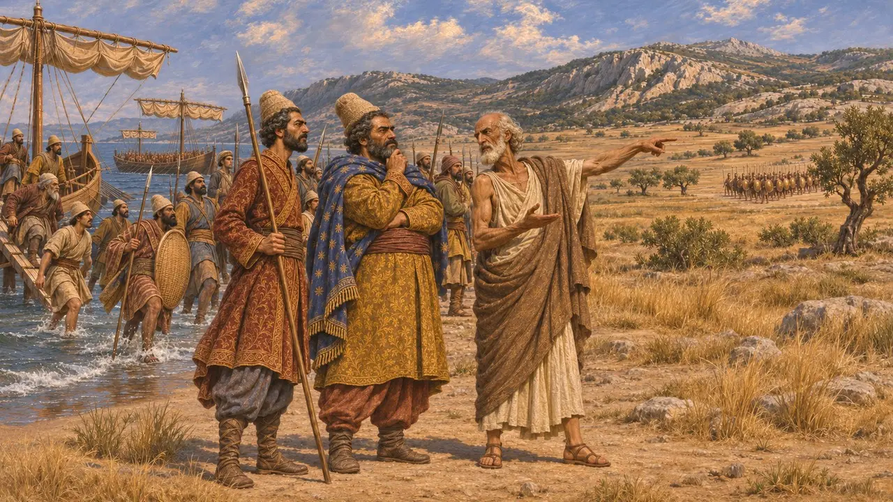
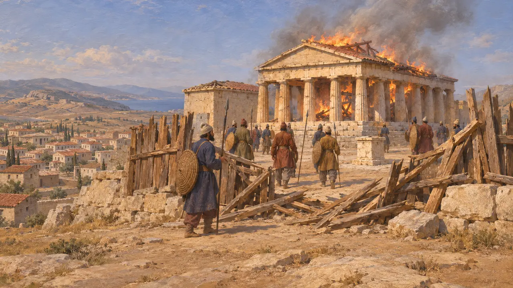
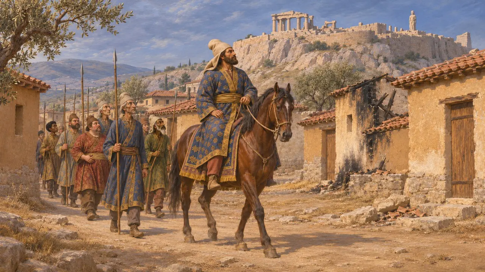
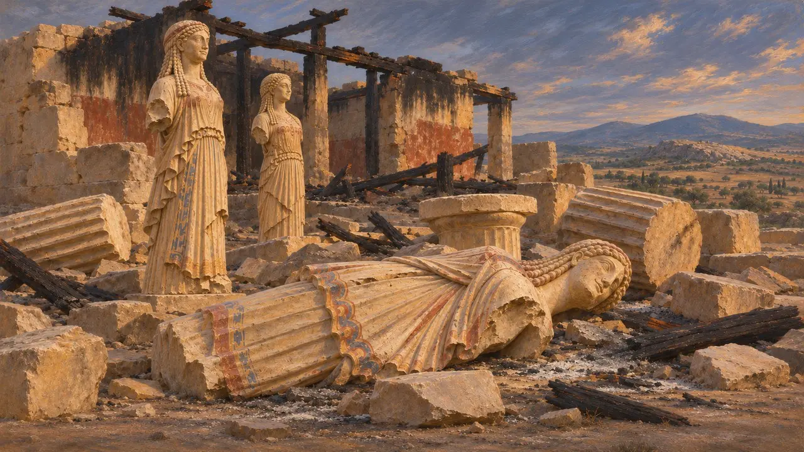
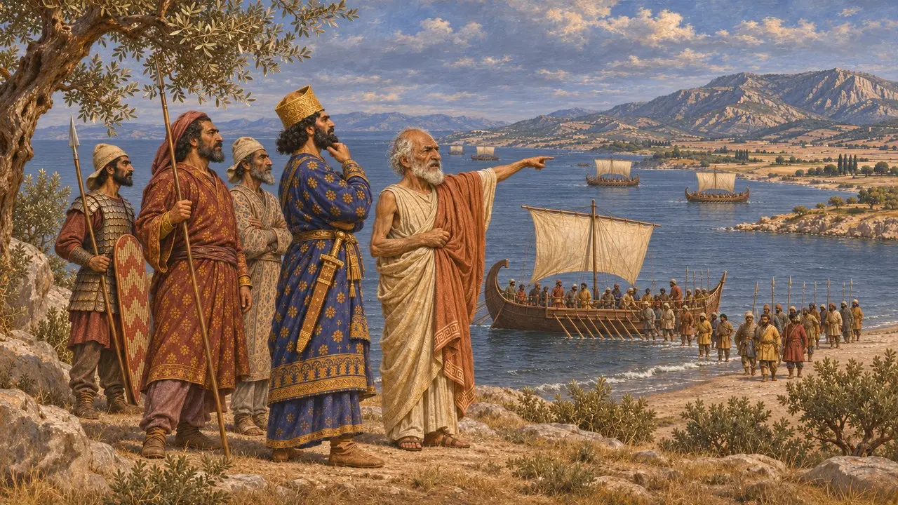

아티카는 아테네가 다스리던 반도로, 북동쪽 해안에는 마라톤이, 내륙에는 아테네 평원이 있었습니다. 페르시아 군은 기원전 490년에 이곳에 상륙했고, 기원전 480년에 아테네를 점령했으며, 기원전 479년에는 마르도니오스의 지휘 아래 다시 돌아왔습니다. 그리스 저술가들은 이 사건들을 전쟁에 대한 기억의 중심에 놓았습니다.
게임에서: 아티카에는 자체 레벨이나 시스템이 없습니다. 게임에서는 연대기와 마라톤, 아테네 점령, 플라타이아에 관한 사건 문서에서만 아티카를 언급합니다.

기원전 490년의 마라톤
고대의 전승헤로도토스에 따르면 다티스와 아르타프레네스가 이끄는 페르시아 함대는 지형을 잘 아는 망명자 히피아스의 안내를 받아 아티카 해안의 마라톤에 상륙했다. 아테네인은 성벽 뒤에서 기다리지 않고 직접 나아가 적을 맞섰다. 헤로도토스는 아테네 측 전사자를 192명, 페르시아 측 전사자를 6,400명으로 전한다.
Herodotus 6.102-117

기원전 480년에 함락된 아테네
고대의 전승헤로도토스에 따르면 아테네인들은 크세르크세스의 군대가 진군해 오자 대부분의 주민을 살라미스, 트로이젠, 아이기나로 옮겼다. 페르시아인은 거의 텅 빈 도시에 들어가 아크로폴리스를 점령했는데, 그곳에서는 소수의 수비대가 한동안 목책 뒤에서 버텼다. 헤로도토스는 페르시아인이 이어서 그곳의 성소들을 불태웠다고 전한다.
Herodotus 8.41-53

마르도니오스, 기원전 479년에 돌아오다
고대의 전승헤로도토스에 따르면 마르도니오스는 살라미스 이후 테살리아와 보이오티아에서 겨울을 났다. 기원전 479년 아테네가 마케도니아의 알렉산드로스가 가져온 제안을 거절하자, 그는 다시 아티카로 진군했고 도시가 또다시 버려진 것을 보았다. 그러고는 그리스군이 집결하기 전에 보이오티아로 물러났다.
Herodotus 8.136-144; 9.1-13

아크로폴리스에 남은 불탄 잔해
당대 기록아크로폴리스 발굴에서는 페르시아의 약탈로 생긴 파괴 잔해가 발견되었으며, 손상된 조각상과 건축 부재도 포함되어 있었다. 아테네인은 나중에 재건하면서 이 자재의 상당 부분을 메움층에 묻었다. 이러한 발견은 기원전 480년에 성소들이 불탔다는 그리스 측 기록과 일치한다.
Excavation reports on the Acropolis

페르시아인이 아티카를 택한 이유
분쟁 중헤로도토스는 기원전 490년의 원정을, 사르디스에서 이오니아 반란군을 도운 아테네와 에레트리아에 대한 징벌로 설명한다. 일부 현대 역사가들은 페르시아인이 히피아스를 복위시키고 에게해의 섬들과 에우보이아를 장악하려는 목적도 있었다고 본다. 병력의 규모 또한 논란거리다. 헤로도토스는 함선 600척을 제시하지만, 역사가들은 후대 사료에 나오는 병력 수를 대체로 믿을 수 없다고 본다.
Herodotus 6.94-95; P. Briant, From Cyrus to Alexander, 2002
출처
- Herodotus 6.102-117
- Herodotus 8.41-53
- Herodotus 8.136-144 and 9.1-13
- Herodotus 6.94-95
- P. Briant, From Cyrus to Alexander, 2002